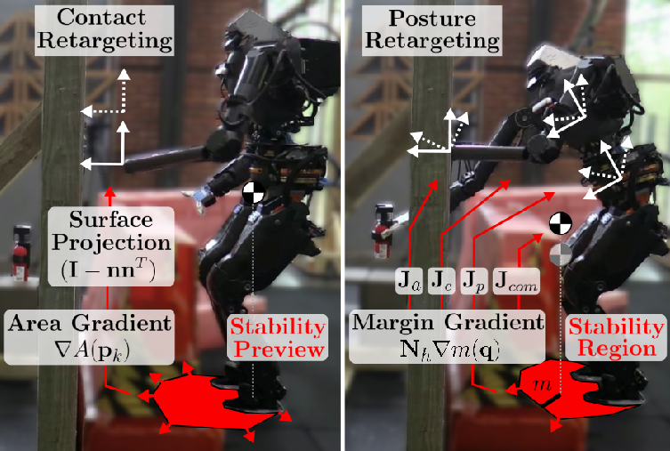

News
- 2025 Paper on humanoid multi-contact teleoperation published in IEEE RA-L
- 2024 Joined Apptronik as Software Engineer - Legged Controls
- 2024 Completed M.S. Thesis: "Gait Synthesis and Controller Design for Dynamic 3D Bipedal Robot Walking"
- 2023 Joined Boardwalk Robotics as Controls and Autonomy Engineer
- 2023 Paper on MPCC for bipedal robots presented at IROS 2023
- 2022 Paper on sequential MPC for bipedal robots published in IEEE RA-L
Publications

Gait Synthesis and Controller Design for Dynamic 3D Bipedal Robot Walking
M.S. Thesis, University of Delaware, 2024

Projects
MPC-Based Global Trajectory Tracking for Humanoid Robots
2022
Model Predictive Control approach for global trajectory tracking on the Digit humanoid robot from Agility Robotics.
Trajectory Optimization for Digit Robot
2021
Optimizing trajectories for straight-ahead walking motion on the Digit robot from Agility Robotics.
Understanding Hybrid Zero Dynamics
2019
A tutorial explaining HZD-based controllers and how they can drive a reduced-order system via feedback using virtual constraints. Includes simulation of a 5-Link biped robot.